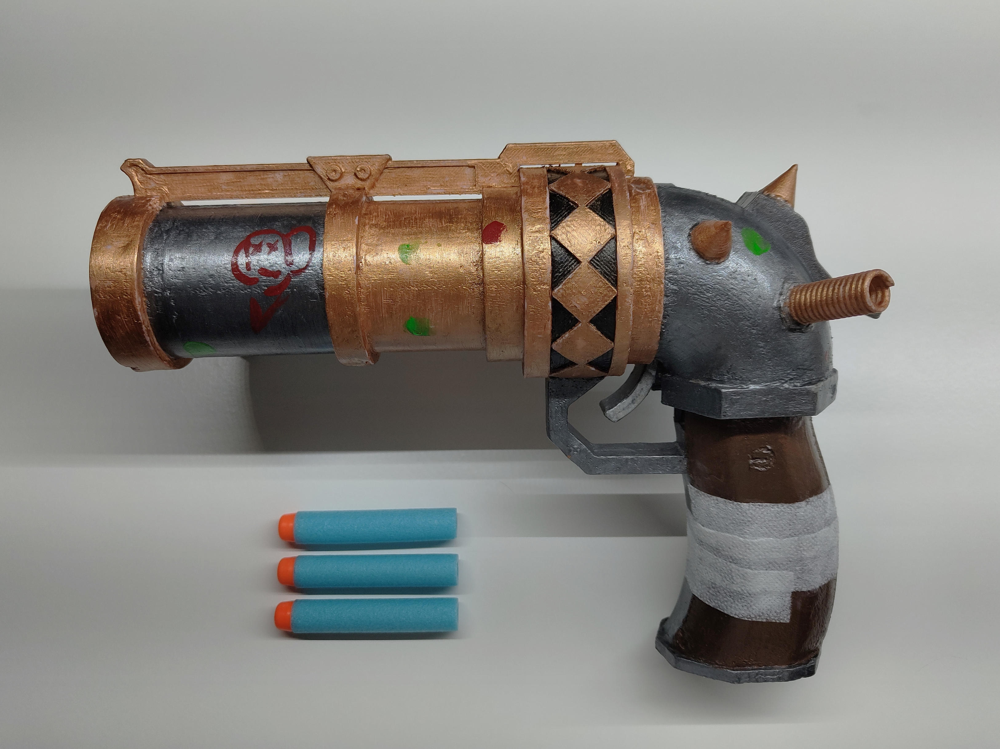
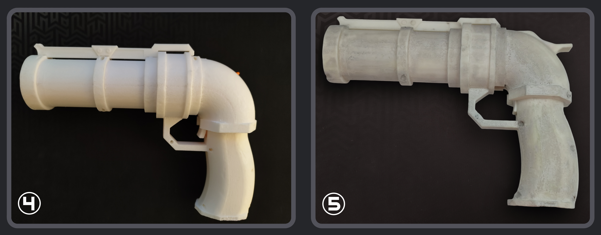

Jinx-Blaster
 This is my replica of the Jinx blaster from the series Arcane.
Description
What was the idea?
Nowadays, on the internet you can find all sorts of things, including multiple different replicas of the Jinx Blasters. But none of those Jinx Blasters were able to shoot. So I decided to put my 3D printing skills to the test and create my own.
You have multiple options for shooting mechanisms like gel balls, airsoft and so on; but the simplest and most commonly used mechanism is the one inside nerf guns. So I ordered some revolver-like nerf blasters (to be specific, the double Roblox nerf bundle).
For the other materials, you could’ve gone for cardboard, wood or something else, but I decided to make it harder and used plastic. Only recently did I acquire a 3D printer and therefore had to learn everything from scratch.
How much did it cost?
These are rough estimates and can easily be reduced by optimising the material and the plastic production.
-
Product (material): acrylic color (0.25€), acrylic protective coat (1.0€), bolts (1.30€), filling putty (2.10€), accessory bandage (0.01€), shooting mechanism + nerf bullets (10.0€), plastic filament 400g (8.0€), energy cost 58h*0.09kWh=5.22kW (~2.09€) ==> 24.75€
-
Product (time): printing time (58h), removing supports (3h), sanding (4h), assembling (1h), painting (4h), drying time (16h) ==> 74h passive and 12h active
-
Product (total): 264.75€ (with 20€/h and ~1d waiting time)
-
Prototyping (material): acrylic color (3.0€), acrylic protective coat (6.0€), bolts (2.8€), filling putty (4.5€), accessory bandage (0.0€), shooting mechanism + nerf bullets (20.0€), plastic filament 1900g (38.0€), energy cost 290h*0.09kWh=26.1kW (~10.44€) ==> 84.74€
-
Prototyping (time): printing time (290h), 3D modeling + measuring (100h), removing supports (10h), sanding (6h), assembling (2h), painting (4h), drying time (16h) ==> 306h passive and 138h active
-
Prototyping (total): 2844.74€ (with 20€/h and ~13d waiting time)
Prototyping
Mechanism:
The objective was to remove the visible cover of the working nerf blaster and create my own cover that looked like the Jinx Blaster. By removing the cover, you must remove parts that are essential for stabilising the mechanism. Using as little material as possible, you can create a skeleton that wraps around the mechanism, making it work again. Until now, the development involved a lot of measuring and testing, as seen in picture 1.
With a working mechanism inside the newly created skeleton, you only have to create a cover, as seen in picture 2. At this development stage, you have to get creative and estimate all the sizes to get the look as close to the original as possible.
In my case, this method didn’t work because the skeleton and the cover were too close together, which in general made the prototype more fragile. Because you now have all the measurements of your product, you can now redo everything from scratch and simultaneously create the skeleton and the cover, as seen in picture 3.
Tip: Printing all parts with gray filament will help with painting, as the filament color will act as a primer.

Accessories/pre-painting:
Because the hammer and the trigger were orange (from the mechanism), they are too smooth to be painted, so you would need to replace both with your own. I wasn’t able to replace all the orange parts, because some have complicated shapes and sometimes even require a super smooth surface.
Now you can experiment with accessories you might want to add, like the top part, as seen in picture 4, or the coils and ring and spikes, as seen in picture 0. Here you can, of course, get as creative as you wish, switching up the material and so forth.
After having finished adding all the accessories, you can start using filling putty to smooth the surface of the whole blaster, as seen in picture 5. This step is highly recommended, because it can even hide the screw holes, but it is not necessary - sandpaper is sometimes good enough.

Painting:
The painting process is fairly straight-forward: use acrylic colors that fit and apply as many layers as needed. You can use a primer before painting if you wish, but in my case, there was no need.
In the end, you apply a protective coat, so the color will stick to the plastic and viola! You have created your very own, unique Jinx Blaster.
Finishing words
Thank you for reading this article, it means a lot to me. If you need help at any point, feel free to contact me - I’d be happy to help. But keep in mind, that I won’t share the whole 3D model.